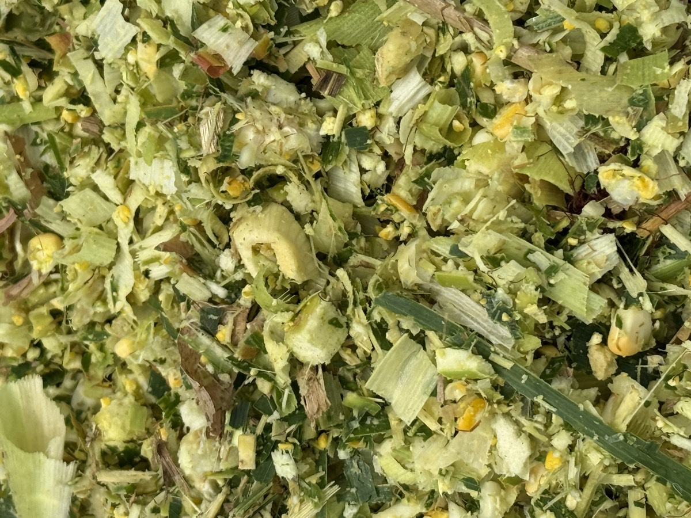

প্রতি সপ্তাহেই নতুন কেউ জিজ্ঞেস করেন, খামার শুরু করতে চাই, কী দিয়ে শুরু করব? উত্তরটা অনেকের প্রত্যাশার উল্টো: গরু দিয়ে নয়, খাতা-কলম দিয়ে। যে খামারি শুরুর আগে খরচ, খাদ্যের উৎস আর দুধ বিক্রির জায়গা ঠিক করে নেন, তিনিই টিকে থাকেন। এই গাইডে আমরা ধাপে ধাপে সেই পরিকল্পনাটাই সাজিয়ে দিচ্ছি।
জরুরি বিষয়
এই গাইডে গরুর দাম বা লাভের নিশ্চিত অঙ্ক দেওয়া হয়নি, কারণ তা এলাকা, জাত ও মৌসুমভেদে অনেক বদলায়। কেনার আগে নিজের এলাকার হাটের দাম, দুধের পাইকারি দর আর উপজেলা প্রাণিসম্পদ অফিসের পরামর্শ নিয়ে নিজের হিসাব করুন। যে অঙ্ক আপনি নিজে যাচাই করেননি, তার উপর পুঁজি খাটাবেন না।
ধাপ ১: ছোট শুরু করুন, ২টি গাভীই যথেষ্ট
নতুন খামারির সবচেয়ে নিরাপদ শুরু ২টি দুধের গাভী। কারণ তিনটি। প্রথমত, পুঁজি কম লাগে এবং একটি গরু অসুস্থ হলেও পুরো খামার থেমে যায় না। দ্বিতীয়ত, ২টি গরুর দেখাশোনা একজন মানুষ সংসারের কাজের পাশেই করতে পারেন, শুরুতেই কর্মচারীর খরচ লাগে না। তৃতীয়ত, প্রথম ৬ মাসে আপনি যা শিখবেন (খাওয়ানো, দোহন, রোগের লক্ষণ চেনা), সেই শিক্ষাটা ২টি গরুতে ভুল করে শেখা অনেক সস্তা।
জায়গা নিয়ে ভয় পাবেন না। পাঁচ শতক জমি বা বাড়ির পাশের উঠানেও গোছানো খামার হয়। কীভাবে, তার বিস্তারিত আছে কম জায়গায় গাভী পালনের গাইডে।
ধাপ ২: গোয়াল আগে, গরু পরে
গরু কিনে এনে তারপর ঘর বানাতে গেলে ভোগান্তি নিশ্চিত। আগে সাধারণ কিন্তু সঠিক একটি গোয়াল তৈরি করুন:
- মেঝে মাটি থেকে সামান্য উঁচু ও ঢালু, যেন প্রস্রাব ও পানি জমে না থাকে।
- ছাউনি বৃষ্টি আটকাবে, কিন্তু দুই পাশ খোলা রাখুন যেন বাতাস চলে। গুমোট ঘরে গরু বেশি অসুস্থ হয়।
- প্রতিটি গরুর জন্য আলাদা খাবার পাত্র ও সবসময় পরিষ্কার পানির ব্যবস্থা।
- খড় ও দানাদার রাখার শুকনো জায়গা, আর সাইলেজের বস্তা রাখার ছায়াযুক্ত কোণ।
ধাপ ৩: গরু কেনার নিয়ম
গরু কেনাই নতুনদের সবচেয়ে ঝুঁকির জায়গা। কয়েকটি নিয়ম মানলে ঠকার সম্ভাবনা অনেক কমে।
- প্রথম গরু কখনো একা কিনতে যাবেন না। এলাকার অভিজ্ঞ খামারি বা প্রাণিসম্পদ অফিসের পরিচিত কাউকে সঙ্গে নিন।
- দুধের গাভী কিনলে নিজের চোখে দোহন দেখে তবেই দাম বলুন। শোনা কথায় দুধের পরিমাণ ধরবেন না।
- জাত নির্বাচনে উপজেলা প্রাণিসম্পদ অফিসের পরামর্শ নিন। এলাকার আবহাওয়ায় কোন জাত ভালো করে, তারা জানেন।
- টিকা ও কৃমিনাশকের ইতিহাস জিজ্ঞেস করুন। কেনার পরপরই নিজের রেকর্ড শুরু করুন, আমাদের ফ্রি টিকা ও কৃমিনাশক রেকর্ড শিট প্রিন্ট করে নিতে পারেন।
ধাপ ৪: খাদ্যের হিসাবটা আগেই করে ফেলুন
খামারের নিয়মিত খরচের সবচেয়ে বড় অংশ খাদ্য। এখানেই বেশিরভাগ নতুন খামারি হোঁচট খান, কারণ তারা গরু কেনার হিসাব করেন কিন্তু ৩৬৫ দিন খাওয়ানোর হিসাব করেন না। সাইলেজভিত্তিক খাবারে হিসাবটা সহজ ও সারা বছর একই থাকে:
- একটি দুধের গাভী: দৈনিক ২০ কেজি সাইলেজ, কেজি ১০ টাকা দরে দিনে ২০০ টাকা, মাসে ৬,০০০ টাকা।
- ২টি গাভীর সাইলেজ: মাসে প্রায় ১,২০০ কেজি, অর্থাৎ ৫০ কেজির ২৪ বস্তা, ১২,০০০ টাকা।
- এর সঙ্গে যোগ হবে খড় (দৈনিক ২-৩ কেজি), দানাদার ও লবণ-ভিটামিন, যার দাম এলাকা অনুযায়ী আলাদা।
খামারভেস্ট সাইলেজ ৫০ কেজির এয়ারটাইট বস্তায় সারাদেশে ক্যাশ অন ডেলিভারিতে পৌঁছে দেয়, তাই সবুজ ঘাসের জমি না থাকলেও সারা বছর একই দামে সবুজ খাবারের ব্যবস্থা করা যায়। না-খোলা বস্তা ৬-১২ মাস ভালো থাকে বলে একবারে কয়েক মাসের খাবার ঘরে রাখা যায়। নতুন গরুকে প্রথমবার সাইলেজ দেওয়ার আগে প্রথমবার খাওয়ানোর নিয়ম গাইডটি অবশ্যই দেখুন, ৭ দিনে ধীরে অভ্যাস করাতে হয়।
দুধ বিক্রি করে মাস শেষে কত থাকবে, তা আন্দাজে না ধরে আমাদের ফ্রি দুধের লাভ-লস ক্যালকুলেটরে নিজের এলাকার দুধের দর ও খরচ বসিয়ে দেখুন।
নতুন খামারিদের ৫টি সাধারণ ভুল
- সব পুঁজি দিয়ে গরু কেনা: খাবার, চিকিৎসা ও অন্তত ৩ মাসের চলতি খরচের টাকা আলাদা না রাখলে প্রথম বিপদেই গরু বেচে দিতে হয়।
- হিসাব না রাখা: দৈনিক দুধ ও খরচ না লিখলে লাভ-লস কোথায় হচ্ছে বোঝা যায় না। আমাদের ফ্রি হিসাব খাতা প্রিন্ট করে দিন থেকেই লেখা শুরু করুন।
- মৌসুমের পরিকল্পনা না করা: শীতে খড়ের দাম বাড়ে, বর্ষায় ঘাসে রোগের ঝুঁকি। শীতের ও বর্ষার খাদ্য ব্যবস্থাপনা গাইড দুটি আগে থেকে পড়ে রাখুন।
- রোগের লক্ষণ দেরিতে ধরা: খাওয়া কমা, ঝিমানো বা দুধ হঠাৎ কমা দেখলেই ভেটেরিনারি চিকিৎসকের পরামর্শ নিন। নিজে ওষুধ দেবেন না।
- একসঙ্গে বড় হওয়ার চেষ্টা: ২টি গরু লাভে চললে তবেই ৪টিতে যান। ধার করে হঠাৎ বড় হওয়া খামারই সবচেয়ে বেশি বন্ধ হয়।
শুরু করার আগে শেষ চেকলিস্ট
- গোয়াল প্রস্তুত, পানি ও খাবার পাত্র বসানো।
- এলাকার দুধ বিক্রির জায়গা (ঘোষ, মিষ্টির দোকান, সমিতি) ঠিক করা।
- প্রথম ৩ মাসের খাদ্যের ব্যবস্থা ও টাকা আলাদা করা।
- উপজেলা প্রাণিসম্পদ অফিসের নম্বর ও কাছের ভেটেরিনারি চিকিৎসকের নম্বর ফোনে রাখা।
- হিসাব খাতা ও টিকার রেকর্ড শিট প্রিন্ট করে গোয়ালে টানানো।
এই তালিকার সব কটিতে টিক দিতে পারলে আপনি বেশিরভাগ নতুন খামারির চেয়ে এগিয়ে থেকেই শুরু করছেন।
খামারভেস্ট Facebook পেজ
নতুন খামারিদের প্রশ্নের উত্তর, খামার পরিচালনার পরামর্শ ও সাইলেজ আপডেট পেতে ফেসবুকে যুক্ত থাকুন।